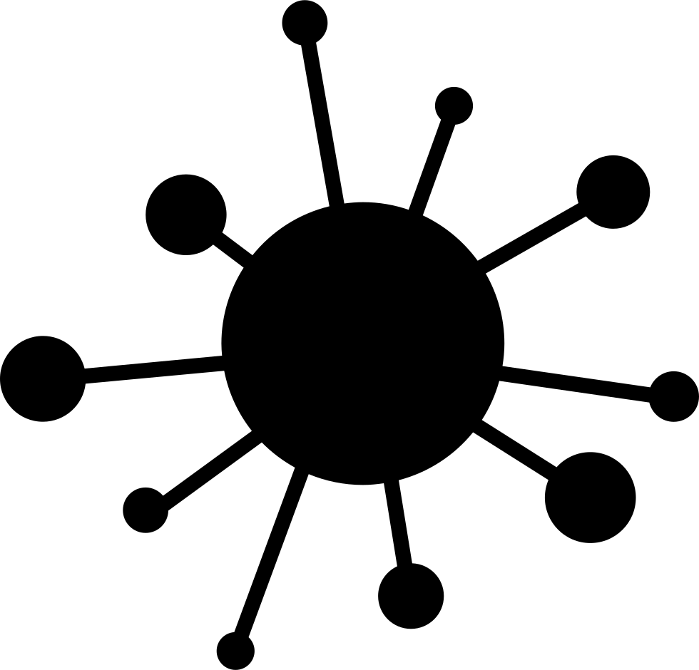

We making thw webs connect...
Connecting the webs is the most important part in every aspect of cyber security and spreading malware throughout different DNS locations
Cyber security
Web security is also known as “Cybersecurity”. It basically means protecting a website or web application by detecting, preventing and responding to cyber threats. Websites and web applications are just as prone to security breaches as physical homes, stores, and government locations.
Computer viruses
A computer virus is a type of computer program that, when executed, replicates itself by modifying other computer programs and inserting its own code. If this replication succeeds, the affected areas are then said to be "infected" with a computer virus, a metaphor derived from biological viruses. Computer viruses generally require a host program. The virus writes its own code into the host program. When the program runs, the written virus program is executed first, causing infection and damage. A computer worm does not need a host program, as it is an independent program or code chunk. Therefore, it is not restricted by the host program, but can run independently and actively carry out attacks.